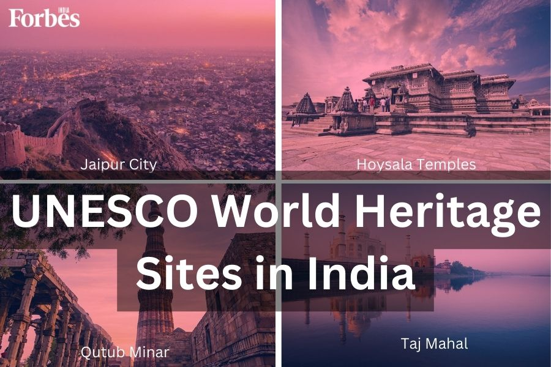
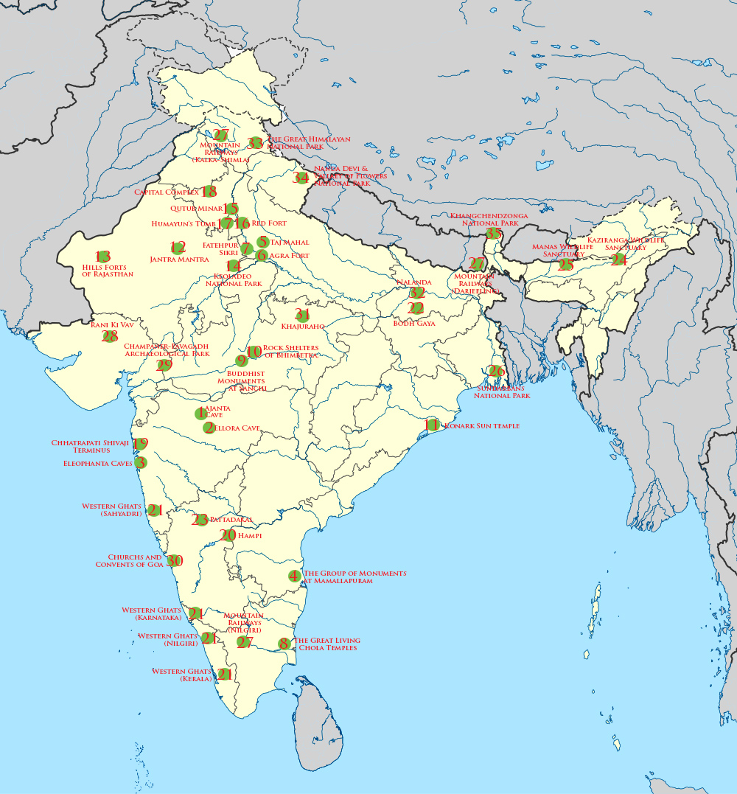

UNESCO
HERITAGE SITES
IN INDIA


42
Properties inscribed
on the World Heritage List
on the World Heritage List
4
Mandates to the World Heritage Committee
151
State of Conservation Reports
35
International assistance
requests Approved
requests Approved
861,732
International assistance
Total Amount Approved (USD)
Total Amount Approved (USD)
UNESCO World Heritage Sites in India are exceptional places recognised for their cultural, natural, or mixed significance. They showcase India's contributions to human civilisation and significantly impact tourism, education, and local economies. These sites are crucial in preserving and promoting the identity and heritage of India on the world stage. Notably, India has the sixth largest number of Heritage Sites globally recognised by UNESCO or the United Nations Educational, Scientific and Cultural Organisation.
| Cultural Heritage Sites in India | Year of Entry | State |
|---|---|---|
| #1 Agra Fort | 1983 | Uttar Pradesh |
| #2 Ajanta Caves | 1983 | Maharashtra |
| #3 Ellora Caves | 1983 | Maharashtra |
| #4 Taj Mahal | 1983 | Uttar Pradesh |
| #5 Group of Monuments at Mahabalipuram | 1984 | Tamil Nadu |
| #6 Sun Temple, Konark | 1984 | Odisha |
| #7 Churches and Convents of Goa | 1984 | Goa |
| #8 Fatehpur Sikri | 1986 | Uttar Pradesh |
| #9 Group of Monuments at Hampi | 1986 | Karnataka |
| #10 Khajuraho Group of Monuments | 1986 | Madhya Pradesh |
| #11 Elephanta Caves | 1987 | Maharashtra |
| #12 Great Living Chola Temples | 1987 | Tamil Nadu |
| #13 Group of Monuments at Pattadakal | 1987 | Karnataka |
| #14 Santiniketan | 2023 | West Bengal |
| #15 Buddhist Monuments at Sanchi | 1989 | Madhya Pradesh |
| #16 Mountain Railways of India | 1999 | West Bengal, Tamil Nadu, Himachal Pradesh |
| #17 Humayuns Tomb, Delhi | 1993 | Delhi |
| #18 Qutub Minar and Monuments, Delhi | 1993 | Delhi |
| #19 Mahabodhi Temple Complex at Bodh Gaya | 2002 | Bihar |
| #20 Rock Shelters of Bhimbetka | 2003 | Madhya Pradesh |
| #21 Champaner-Pavagadh Archaeological Park | 2004 | Gujarat |
| #22 Chhatrapati Shivaji Terminus (formerly Victoria Terminus) | 2004 | Maharashtra |
| #23 Red Fort Complex | 2007 | Delhi |
| #24 Jantar Mantar | 2010 | Jaipur |
| #25 Hill Forts of Rajasthan | 2013 | Rajasthan |
| #26 Rani Ki Vav (The Queen's Stepwell) | 2014 | Gujarat |
| #27 Archaeological Site of Nalanda Mahavira at Nalanda | 2016 | Bihar |
| #28 The Architectural Work of Le Corbusier, an Outstanding Contribution to the Modern Movement | 2016 | Chandigarh |
| #29 Historic City of Ahmedabad | 2017 | Gujarat |
| #30 Victorian Gothic and Art Deco Ensembles of Mumbai | 2018 | Maharashtra |
| #31 Jaipur City | 2019 | Rajasthan |
| #32 Kakatiya Rudreshwara (Ramappa) Temple | 2021 | Telangana |
| #33 Dholavira, a Harappan City | 2021 | Gujarat |
| #34 Sacred Ensembles of the Hoysala | 2023 | Karnataka |
| Natural Heritage Site in India | Year of Entry |
State |
|---|---|---|
| #1 Sundarbans National Park | 1987 | West Bengal |
| #2 Western Ghats | 2012 | Kerala, Tamil Nadu, Karnataka, Goa, Maharashtra, and Gujarat |
| #3 Nanda Devi and Valley of Flowers National Parks | 1988 | Uttarakhand |
| #4 Manas Wildlife Sanctuary | 1985 | Assam |
| #5 Great Himalayan National Park | 2014 | Himachal Pradesh |
| #6 Keoladeo National Park | 1985 | Rajasthan |
| #7 Kaziranga National Park | 1985 | Assam |
| Mixed Heritage Site in India | Year of Entry |
State |
|---|---|---|
| #1 Khangchendzonga National Park | 2016 | Sikkim |


Great Himalayan National Park

Keoladeo National Park

Kaziranga Wild Life Sanctuary

Western Ghats

Khangchendzonga National Park